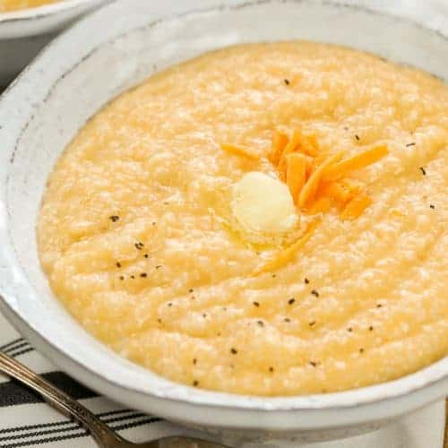

Cheezy Grits

Description
After having dinner one evening at a southern styled restaurant, Avery and I decided we could recreate this particular dish. It worked out great, and we've been enjoying it ever since!
Ingredients
- 2 cups whole milk
- 2 cups water
- 1 1/2 teaspoons kosher salt
- 1 cup coarse ground cornmeal
- 1/2 teaspoon freshly ground black pepper
- 4 tablespoons unsalted butter
- 4 ounces sharp cheddar, shredded
Instructions
- Place the milk, water, and salt into a large, heavy-bottomed pot over medium-high heat and bring to a boil. Once the milk mixture comes to a boil, gradually add the cornmeal while continually whisking. Once all of the cornmeal has been incorporated, decrease the heat to low and cover. Remove lid and whisk frequently, every 3 to 4 minutes, to prevent grits from sticking or forming lumps; make sure to get into corners of pot when whisking. Cook for 20 to 25 minutes or until mixture is creamy.
- Remove from the heat, add the pepper and butter, and whisk to combine. Once the butter is melted, gradually whisk in the cheese a little at a time. Serve immediately.